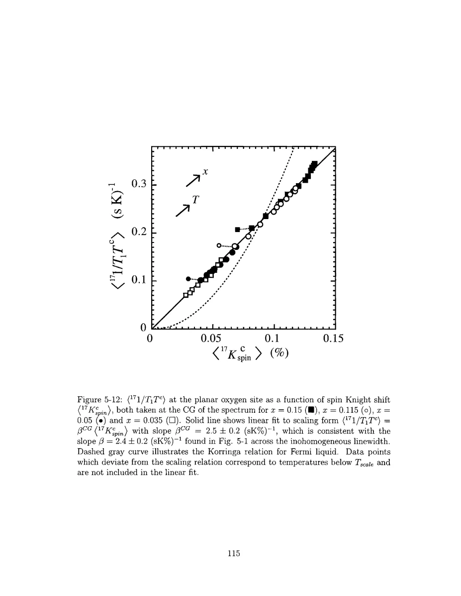

Singer · supplied source 2002 · chapter unit
8. Where scaling fails and what remains established
Below Tscale the oxygen inference loses its simple calibration, while the multi-probe evidence for local variation remains.
The question: What can the breakdown of the calibration tell us without selecting one microscopic explanation?
Before you start: the terms you need
- Nominal x: Sr atoms per LSCO formula unit, used as the average hole-doping label.
- Electric field gradient (EFG): curvature of the electric potential at a nucleus; determines the Cu quadrupole resonance.
- Knight shift: the nuclear resonance shift caused by electronic magnetic response, with orbital and spin contributions.
- T₁ and T₂: recovery of longitudinal nuclear magnetization and decay of transverse coherence; they answer different questions.
- Hyperfine form factor: the wavevector-dependent weighting through which a nucleus samples electronic spin fluctuations.
- HWHM: half width at half maximum; the thesis also defines an effective width from the second moment.
See → explain → check
Follow the idea in 3 pictures.
Picture 1 / 3
Two scaling laws ask different questions
Look for: Compare powers of the spin shift.
Swipe across the picture to read every label, or enlarge it below.
- Empirical oxygen relation
- Uncorrelated-metal reference
Teaching schematic; no measured points or calibrated scales.
A linear observed relation is different from the simple Korringa square law.
Check the original: PDF p. 115 · PDF p. 135
Picture 2 / 3
A failed collapse limits inference
Look for: Treat the departure as a new physical constraint.
Swipe across the picture to read every label, or enlarge it below.
- Scaling window
- Departure below Tscale
- Stop simple conversion
Teaching schematic; no measured points or calibrated scales.
The old calibration cannot simply be extended through Tscale.
Check the original: PDF p. 102 · PDF p. 116
Picture 3 / 3
Separate measured, fitted and proposed
Look for: Place each conclusion at the correct evidence level.
Swipe across the picture to read every label, or enlarge it below.
- Measured local responses
- Fitted averaging scale
- Proposed wipeout mechanism
Teaching evidence chain; length and mechanism carry additional assumptions.
Local variation is better supported than one unique low-temperature microscopic explanation.
Check the original: PDF p. 117 · PDF p. 118 · PDF p. 119
Explain it back.
Try answering aloud before opening the explanation.
Does loss of scaling uniquely prove incommensurate fluctuations?
No. The thesis also discusses low-hole patches; the departure limits the simple inference without uniquely selecting a cause.
Is Rpatch just the antiferromagnetic correlation length?
No. They describe different quantities and have different reported temperature trends.
Go deeper Follow the full argument
Linear response versus Korringa
The oxygen 1/(T₁T)–Kspin relation is approximately linear over the specified region. A simple uncorrelated-metal density-of-states argument instead gives the Korringa square law: shift is proportional to the density of states, whereas relaxation divided by temperature scales as its square. The source plots both forms and shows that the linear empirical relationship describes its scaling regime better. Appendix D explains it with a phenomenological susceptibility containing a uniform term and an antiferromagnetic term. Oxygen's form factor suppresses the latter near the commensurate AF point. This is a model account of the shared static–dynamic response, not a derivation of a unique electronic Hamiltonian. The fitted uniform-channel energy scale depends on a model prefactor and is comparable in order to the exchange energy; it should not be quoted as an independently measured exact bandwidth.
PDF p. 113 · PDF p. 114 · PDF p. 115 · PDF p. 116 · PDF p. 135 · PDF p. 136 · PDF p. 137
Two proposed departures, not one settled cause
Below Tscale, oxygen 1/(T₁T) and the linewidth tend to saturate while the mean spin shift keeps decreasing. Their previous proportionality fails. Singer discusses at least two explanations. Growing incommensurate fluctuations can lie away from the ideal oxygen cancellation point, allowing additional antiferromagnetic spectral weight into relaxation. Alternatively, the inferred hole distribution approaches very low local doping in some regions; nearly undoped patches could generate additional slow or free-spin-like response. The observations do not uniquely distinguish these mechanisms. The correct methodological consequence is to stop the uncomplicated linewidth-to-local-hole inference below the failed-scaling boundary. A saturation of the fitted R in that region is therefore not secure evidence of a physical saturation of the underlying averaging scale.
PDF p. 102 · PDF p. 113 · PDF p. 114 · PDF p. 115 · PDF p. 116
Synthesize without overclaiming
The final chapter combines local Cu dynamics, oxygen spin-shift distributions, random-alloy EFG calculation and their comparable length scales. It argues that the local electronic variation is intrinsic to the studied LSCO samples and grows thermodynamically on cooling, while the random Sr environment remains essential in the modeling. The conclusion also returns to tailed wipeout: lower-hole regions can become fast relaxing and disappear progressively, giving a gradual increase of missing signal before a collective stripe-related feature. This is a proposed explanation supported by the inferred spread, not an exact reconstruction of every invisible nucleus. The length is explicitly a model averaging radius; its diameter must be stated separately. Its cooling trend differs from the growing antiferromagnetic correlation length, so the two lengths should not be identified. Strong evidence for correlated local spin and charge response can coexist with uncertainty about the ultimate microscopic mechanism of low-temperature freezing or stripe organization.
PDF p. 113 · PDF p. 116 · PDF p. 117 · PDF p. 118 · PDF p. 119
Translate the mathematics Essential equations and their meaning
Uncorrelated-metal reference: 1/(T₁T) ∝ Kspin²
Symbols: Kspin is the spin Knight shift, with orbital contributions removed.
The thesis uses this reference to contrast its linear scaling; correlations can modify the simple Korringa relation.
ℏΓB = c₀ · 75 meV in the fitted phenomenology
Symbols: ΓB is the uniform-channel scale and c₀ depends on the model convention.
Source Appendix D explicitly retains a model prefactor; do not promote this to a unique measured band width.
Read the evidence Guided original source pages

PDF p. 115
What the evidence supports—and where it stops
- The phenomenological susceptibility model is not a unique microscopic theory.
- The tailed-wipeout interpretation refers to missing observable signal and is not a complete distribution of hidden regions.
Source version, reading coverage and preservation
Every substantive chapter and appendix was read from locally generated Windows OCR of the scanned original. Key figures, symbols, equations and boundaries were checked on readable full-page renders; PDF and printed page numbers agree at inspected locations.
Reviewed body pages: 10, 11, 12, 13, 14, 15, 16, 17, 18, 19, 20, 21, 22, 23, 24, 25, 26, 27, 28, 29, 30, 31, 32, 33, 34, 35, 36, 37, 38, 39, 40, 41, 42, 43, 44, 45, 46, 47, 48, 49, 50, 51, 52, 53, 54, 55, 56, 57, 58, 59, 60, 61, 62, 63, 64, 65, 66, 67, 68, 69, 70, 71, 72, 73, 74, 75, 76, 77, 78, 79, 80, 81, 82, 83, 84, 85, 86, 87, 88, 89, 90, 91, 92, 93, 94, 95, 96, 97, 98, 99, 100, 101, 102, 103, 104, 105, 106, 107, 108, 109, 110, 111, 112, 113, 114, 115, 116, 117, 118, 119, 120, 121, 122, 123, 124, 125, 126, 127, 128, 129, 130, 131, 132, 133, 134, 135, 136, 137. Bibliography pages 138–144 were not independently verified against every cited publication. Front matter was inspected for title, abstract and chapter mapping. The guide does not claim manual visual reading of every scan or exact transcription of all derivations; OCR is imperfect and the damaged abstract region was checked against the conclusions.
Source SHA-256: e5fdb96ea81a06f7a51624e02fa58319dc3d21926a030e06fbbedc7061f5937d. Original file bytes preserved locally, and in this room’s original download.
Thesis - Singer - 2002 - Nuclear resonance of electronic inhomogeneity in LSCO.pdf